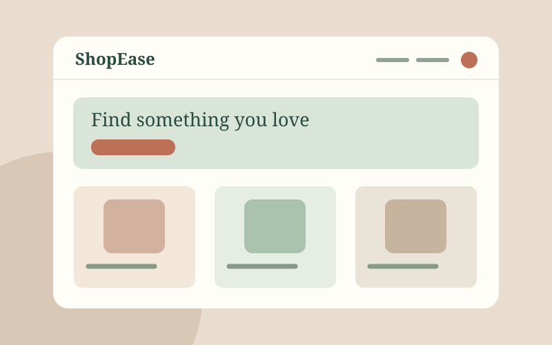

Current
BSIT
Bachelor of Science in Information Technology · Davao del Norte State College
Studying programming, web technologies, systems, and data while applying classroom lessons in hands-on projects.
Hello, I'm Nicole
Nicole James L. Maloloy-on
Information Technology Student & Aspiring Web Developer
I’m an IT student exploring how thoughtful design and clean code can make digital experiences easier to use. I enjoy turning ideas into useful, accessible web pages.
01 / About me
Curiosity, care, and a willingness to keep improving guide how I approach technology.
I’m Nicole, an Information Technology student with a growing interest in front-end development and practical digital solutions.
My career objective is to develop strong web development skills through real projects, collaboration, and continuous learning, then contribute to products that people find genuinely useful.
02 / Education
My academic path and the work that keeps me moving forward.
Bachelor of Science in Information Technology · Davao del Norte State College
Studying programming, web technologies, systems, and data while applying classroom lessons in hands-on projects.
03 / Skills
These example levels are editable self-assessments, not formal proficiency scores.
Always learning. Update these bars to reflect your own comfort level before publishing.
04 / Showcase
Explore my projects on GitHub. The images below are illustrations of each project theme.
Chat application
A chat application project. Visit the repository to explore its code and implementation details.

02 / PROJECTE-commerce
An e-commerce project. Visit the repository to explore its code and implementation details.
No projects in this category yet.
05 / Experience
As a student, I build experience through coursework, working with classmates, and practicing new skills.
Information Technology studies
Learn computing concepts and complete class exercises that turn lessons into practical skills.
Working with classmates
Share ideas, help with group tasks, and practice communication and problem solving together.
Web development practice
Explore HTML, CSS, and JavaScript through small exercises while continuing to improve.
06 / Let's connect
I’m interested in learning, connecting with other builders, and exploring opportunities to grow.